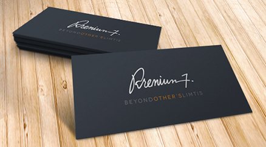
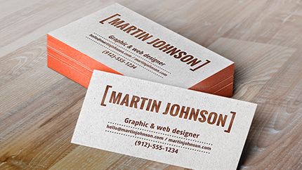

Легко и быстро делайте личные, корпоративные визитки и бейджи
Скачайте конструктор визиток прямо сейчас +150 встроенных шаблонов в ПОДАРОК
Введите ваш e-mail и мы вышлем вам ссылку на скачивание программы
Программа для создания визиток, 150+ шаблонов в комплекте
Стильная и информативная визитка – залог успеха любого делового человека. От этой маленькой вещицы порой зависят крупные сделки, ведь именно по ней создается первоначальное впечатление о компании. В связи с этим грамотное оформление визитной карточки играет особую роль. «Мастер Визиток» предлагает пользователям широкие возможности дизайна. Программа содержит более сотни готовых шаблонов на разнообразные темы: путешествия, спорт, красота и т.д. На базе этих шаблонов можно разработать свой вариант визитки. Чтобы создать визитную карточку с нуля, достаточно выбрать композицию, фон и цветовую гамму, а также по необходимости добавить произвольные фотографии, картинки или логотипы.
 Созданием визиток занимаются типографии и издательства, но гарантий точного соблюдения авторской задумки они не дают. Если вы хотите сэкономить деньги и время и подготовить отличные визитки, вам необходим специальный конструктор визиток на русском языке. Визитка - одна из самых важных и нужных деталей, которые составляют образ любого делового человека. Стоит только положить их в бумажник, и при возникновении перспективного сотрудничества протянуть возможному партнеру по бизнесу. Визитки компактные по размеру и содержат максимум информации о владельце ( ФИО, название фирмы, контакты и пр.) Давно выяснено, что при оценке дизайна и композиции читаемый текст мешает сосредоточиться.
«Мастер Визиток» - хорошая программа для создания визиток, предназначенная для использования в домашних условиях. С ее помощью вы сможете подготовить и распечатать любое количество визитных карточек собственного неповторимого дизайна. Познакомимся поближе с этой утилитой и рассмотрим ее основные функции.
 Программа позволит вам изготовить визитки всех существующих типов, а именно: визитные, контактные и корпоративные карты, а также бейджи. Визитные карточки представляют отдельных сотрудников, а контактные - целые компании и частных специалистов. Корпоративные карточки чаще всего используются для рекламы, а бейдж выгодно выделит вас среди других работников предприятия. Таким образом, данная утилита – не что иное, как универсальный конструктор визиток, которые можно применять для различных целей.
Выберете дизайн из 150 вариантов
Измените информацию
Настройте фон визитки: цвет, градиент, текстуру
Вставте фото или логотип
Сохраните макет в нужном формате
Рассматриваемый нами конструктор визиток оснащен специальной базой данных, предназначенной для хранения информации о компании и сотрудниках. Это позволит легко добавлять, а затем повторно использовать данные для создания визитных карточек. Необходимые сведения очень легко найти в базе посредством системы удобного поиска.
Помимо всего этого, утилита поможет вам произвести качественную печать визиток в домашних условиях. Карточки можно распечатать на бумаге любого типа и формата, в зависимости от ваших личных предпочтений. Чтобы обрезка визиток не доставила хлопот, вы можете установить линии-маркеры обрезки, предварительно расположив макеты на листе. В целях проверки получившегося комплекта, можно запустить пробную печать визиток. Это поможет вам убедиться в том, что все выглядит именно так, как вы задумывали изначально.
Подводя итог сказанному, отметим, что «Мастер Визиток» - наглядный и удобный конструктор визиток, который отлично подойдет пользователей с любым уровнем подготовки. Программа не потребует от вас абсолютно никаких профессиональных навыков и умений, а в случае затруднений вы всегда сможете обратиться к онлайн-учебнику.